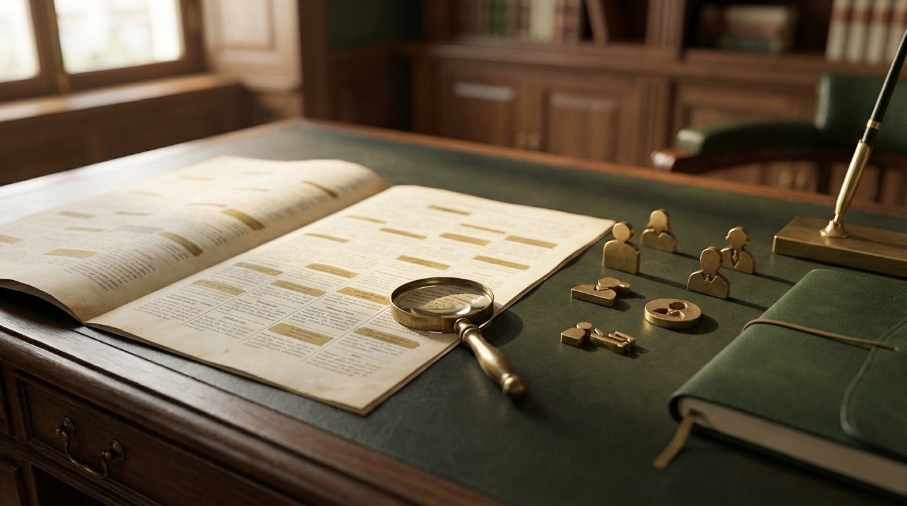

Annunci di lavoro discriminatori: chi può fare causa
La tutela contro le discriminazioni non parte dall'assunzione: scatta già con l'annuncio. Formule come «cercasi under 30» o «no over 40» possono fondare un'azione legale anche prima di un colloquio. Vediamo chi è legittimato ad agire, su quali norme e come si distribuisce l'onere della prova tra candidato escluso, associazioni e datore di lavoro.

Il punto: la discriminazione corre già nell'annuncio
Un annuncio di lavoro non è un atto neutro. Quando seleziona i candidati in base a fattori vietati, produce un effetto discriminatorio prima ancora che qualcuno presenti la candidatura.
È un dato spesso trascurato dalle imprese: la responsabilità non nasce con la mancata assunzione, ma con il messaggio stesso. Formule apparentemente innocue — «cercasi giovane di bella presenza», «no over 40», «automunito» quando non strettamente necessario — possono integrare una discriminazione rilevante sul piano giuridico.
Inquadramento normativo
Il divieto di discriminazione nell'accesso al lavoro ha più fonti, che vanno tenute distinte perché coprono fattori diversi.
L'art. 15 della legge 300/1970 (Statuto dei lavoratori) sanziona con la nullità gli atti datoriali discriminatori per ragioni politiche, religiose, razziali, di lingua, di sesso, di handicap, di età, di orientamento sessuale o di convinzioni personali.
Il d.lgs. 216/2003 attua la direttiva 2000/78/CE e copre le discriminazioni per religione, convinzioni personali, handicap, età e orientamento sessuale, anche nella fase di accesso all'occupazione (art. 3). È bene precisare un punto su cui si fa spesso confusione: le discriminazioni di genere non rientrano nel d.lgs. 216/2003, ma sono disciplinate dal Codice delle pari opportunità (d.lgs. 198/2006). Per il fattore «età», invece, il riferimento corretto resta proprio il d.lgs. 216/2003.
La distinzione non è formale: cambia la fonte da invocare in giudizio e, in parte, la disciplina applicabile.
Chi può agire
La legittimazione attiva non spetta solo al candidato escluso.
Il candidato che si veda negato l'accesso, o anche solo scoraggiato dalla candidatura per un requisito illegittimo, può agire ai sensi dell'art. 4 d.lgs. 216/2003, anche con il rito speciale dell'art. 28 d.lgs. 150/2011.
L'aspetto più delicato riguarda la tutela collettiva. L'art. 5 d.lgs. 216/2003 legittima le associazioni e gli enti iscritti in un apposito elenco ad agire in giudizio in nome, per conto o a sostegno del soggetto leso. La stessa norma riconosce a tali enti la legittimazione anche nei casi di discriminazione collettiva, quando le persone lese non sono direttamente e immediatamente individuabili.
È qui il nodo interpretativo più interessante.
Discriminazione senza vittima identificabile
Un annuncio discriminatorio può non avere una vittima concreta: nessuno si è candidato, perché il messaggio ha già selezionato a monte. Manca, in apparenza, un soggetto leso da tutelare.
L'orientamento giurisprudenziale, in linea con la giurisprudenza della Corte di Giustizia UE (caso Feryn, C-54/07), riconosce che la discriminazione può sussistere anche in assenza di una vittima identificabile. La dichiarazione pubblica di non voler assumere lavoratori appartenenti a una determinata categoria è di per sé una discriminazione diretta, perché scoraggia le candidature e lede un interesse collettivo.
In questi casi la tutela passa necessariamente attraverso i soggetti collettivi legittimati ex art. 5: sono loro a poter far valere in giudizio la natura discriminatoria dell'annuncio, a prescindere da un danno individuale concreto.
Onere della prova
Il meccanismo probatorio è agevolato per chi lamenta la discriminazione. Chi agisce deve allegare elementi di fatto — anche statistici — idonei a fondare, in termini precisi e concordanti, la presunzione di una condotta discriminatoria.
A quel punto l'onere si sposta sul datore di lavoro, che deve dimostrare l'insussistenza della discriminazione. Va chiarito un punto su cui si commettono errori frequenti: la discriminazione può essere oggettiva e prescindere dall'intento. Il datore non deve provare la propria buona fede o l'assenza di volontà discriminatoria, ma che la condotta, sul piano oggettivo, non integra una disparità di trattamento vietata.
Implicazioni pratiche
Per le imprese il rischio si sposta in avanti: la fase di redazione dell'annuncio diventa il primo presidio di legalità. Un testo mal calibrato può esporre a un'azione collettiva anche in assenza di candidature.
Per i candidati e le associazioni, la possibilità di intervenire già sull'annuncio amplia in modo significativo gli strumenti di tutela.
Cosa fare in concreto
- Datori di lavoro: rivedete i testi degli annunci eliminando ogni riferimento a età, genere, provenienza o altri fattori non giustificati dalla natura della mansione.
- Datori di lavoro: conservate documentazione oggettiva sui criteri di selezione, utile in caso di contestazione.
- Candidati esclusi: salvate l'annuncio (screenshot, link, data) e ogni comunicazione ricevuta, prima che venga rimosso.
- Associazioni ed enti legittimati: verificate l'iscrizione nell'elenco previsto dall'art. 5 d.lgs. 216/2003, presupposto della legittimazione ad agire.
- Tutti: valutate il rito speciale dell'art. 28 d.lgs. 150/2011, che consente una tutela più rapida.
Disclaimer
Contributo informativo a cura di Tamburro & Partners - Avv. Giuseppe Tamburro. Non costituisce parere legale.
Ogni storia di lavoro ha i suoi tempi.
Se gestisci HR e vuoi un confronto su contenzioso, ispezioni o licenziamenti, scrivi allo studio. Ti rispondiamo entro un giorno lavorativo.